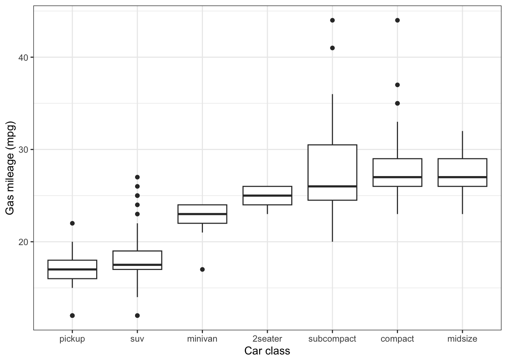
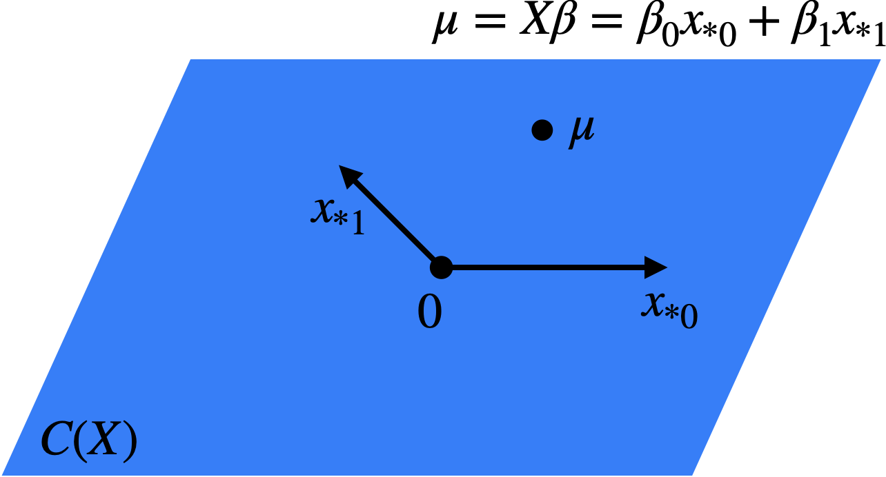
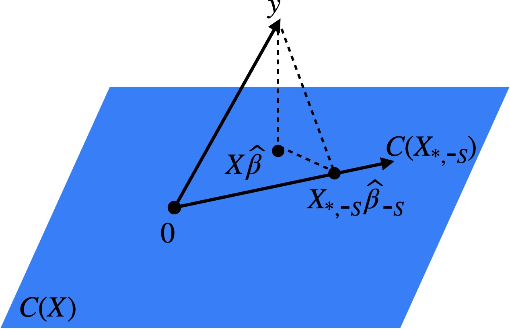
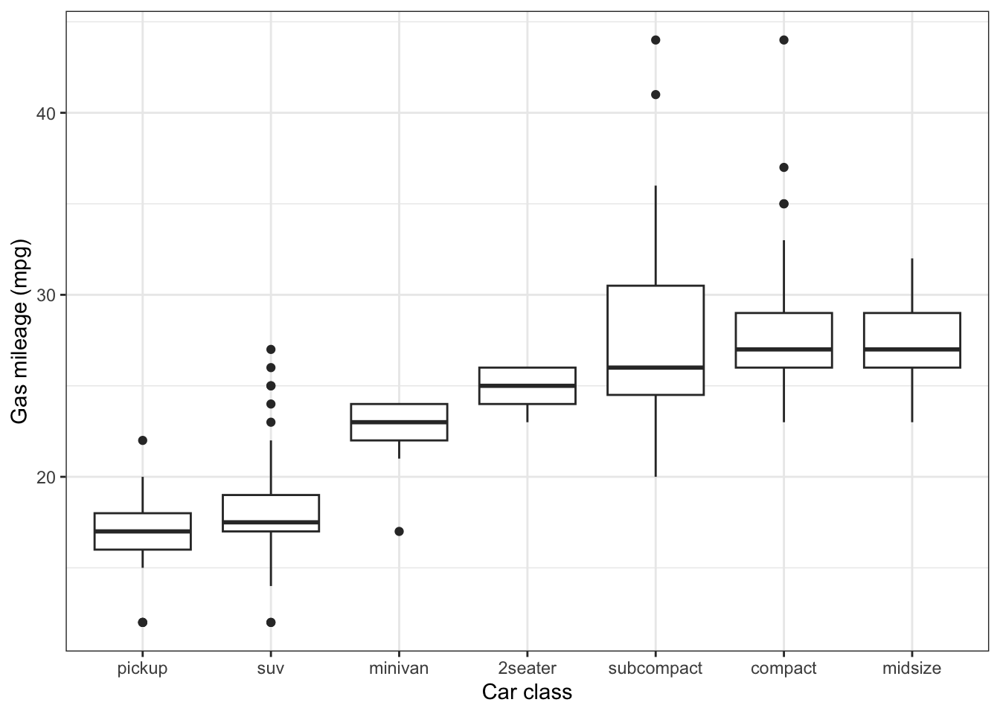
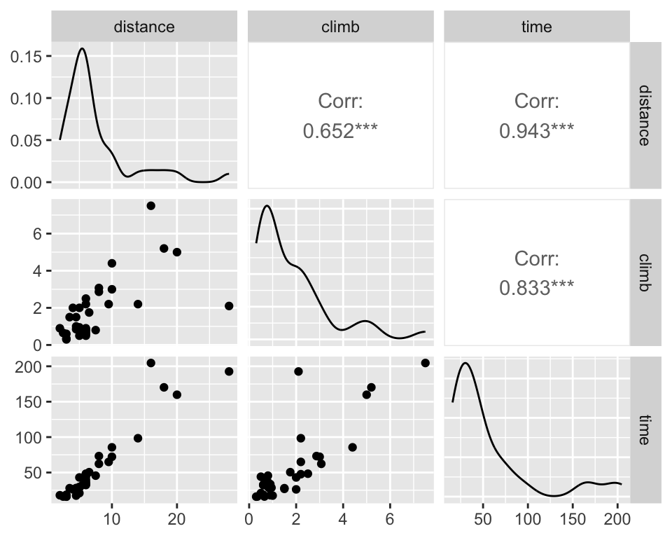
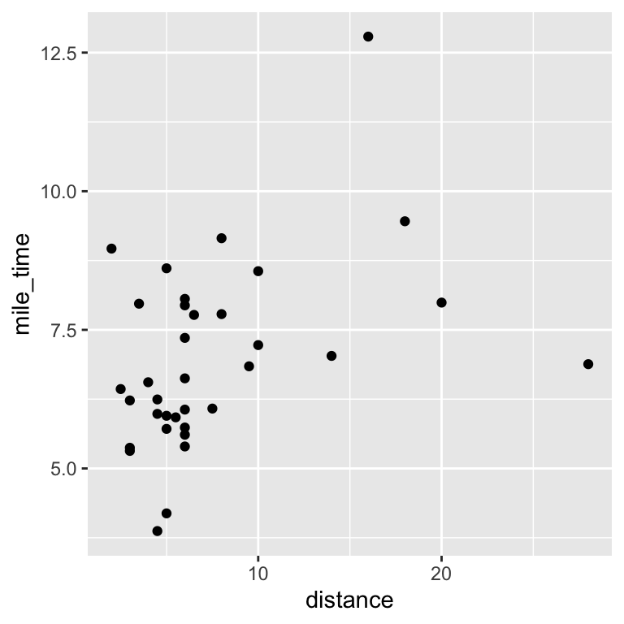
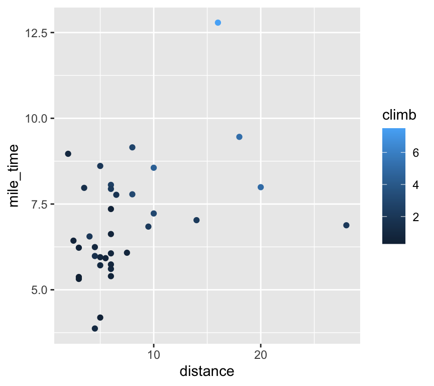
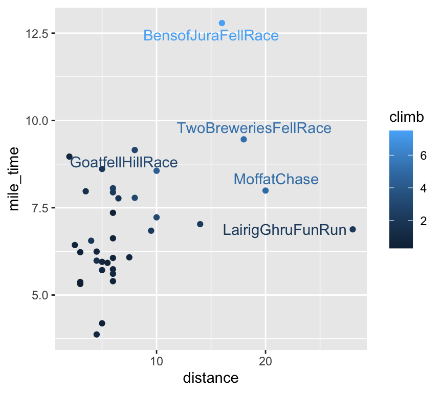
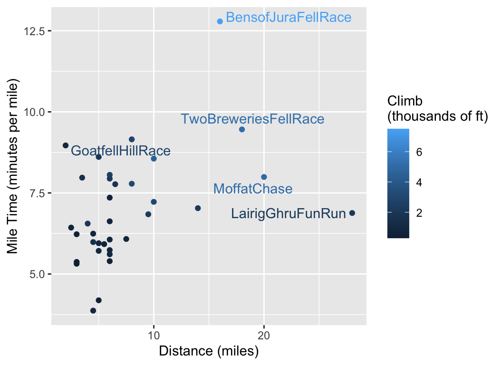

library(tidyverse)
mpg |>
ggplot() +
geom_boxplot(aes(x = fct_reorder(class, hwy), y = hwy)) +
labs(x = "Car class", y = "Gas mileage (mpg)") +
theme_bw()
See also Agresti 1.2, Dunn and Smyth 1.4, 1.7, 2.7
The types of predictors \(x_j\) (e.g. binary or continuous) has less of an effect on the regression than the type of response, but it is still important to pay attention to the former.
Intercepts. It is common to include an intercept in a linear regression model, a predictor \(x_0\) such that \(x_{i0} = 1\) for all \(i\). When an intercept is present, we index it as the 0th predictor. The simplest kind of linear model is the intercept-only model or the one-sample model: \[ y = \beta_0 + \epsilon. \tag{1.1}\] The parameter \(\beta_0\) is the mean of the response.
Binary predictors. In addition to an intercept, suppose we have a binary predictor \(x_1 \in \{0,1\}\) (e.g. \(x_1 = 1\) for patients who took blood pressure medication and \(x_1 = 0\) for those who didn’t). This leads to the following linear model: \[ y = \beta_0 + \beta_1 x_1 + \epsilon. \tag{1.2}\] Here, \(\beta_0\) is the mean response (say blood pressure) for observations with \(x_1 = 0\) and \(\beta_0 + \beta_1\) is the mean response for observations with \(x_1 = 1\). Therefore, the parameter \(\beta_1\) is the difference in mean response between observations with \(x_1 = 1\) and \(x_1 = 0\). This parameter is sometimes called the effect or effect size of \(x_1\), though a causal relationship might or might not be present. The model (1.2) is sometimes called the two-sample model, because the response data can be split into two “samples”: those corresponding to \(x_1 = 0\) and those corresponding to \(x_1 = 1\).
Categorical predictors. A binary predictor is a special case of a categorical predictor: A predictor taking two or more discrete values. Suppose we have a predictor \(w \in \{w_0, w_1, \dots, w_{C-1}\}\), where \(C \geq 2\) is the number of categories and \(w_0, \dots, w_{C-1}\) are the levels of \(w\). E.g. suppose \(\{w_0, \dots, w_{C-1}\}\) is the collection of U.S. states, so that \(C = 50\). If we want to regress a response on the categorical predictor \(w\), we cannot simply set \(x_1 = w\) in the context of the linear regression (1.2). Indeed, \(w\) does not necessarily take numerical values. Instead, we need to add a predictor \(x_j\) for each of the levels of \(w\). In particular, define \(x_j \equiv \mathbbm 1(w = w_j)\) for \(j = 1, \dots, C-1\) and consider the regression \[ y = \beta_0 + \beta_1 x_1 + \cdots + \beta_{C-1}x_{C-1} + \epsilon. \tag{1.3}\] Here, category 0 is the base category, and \(\beta_0\) represents the mean response in the base category. The coefficient \(\beta_j\) represents the difference in mean response between the \(j\)th category and the base category.
Quantitative predictors. A quantitative predictor is one that can take on any real value. For example, suppose that \(x_1 \in \mathbb{R}\), and consider the linear model \[ y = \beta_0 + \beta_1 x_1 + \epsilon. \tag{1.4}\] Now, the interpretation of \(\beta_1\) is that an increase in \(x_1\) by 1 is associated with an increase in \(y\) by \(\beta_1\). We must be careful to avoid saying “an increase in \(x_1\) by 1 causes \(y\) to increase by \(\beta_1\)” unless we make additional causal assumptions. Note that the units of \(x_1\) matter. If \(x_1\) is the height of a person, then the value and the interpretation of \(\beta_1\) changes depending on whether that height is measured in feet or in meters.
Ordinal predictors. There is an awkward category of predictor in between categorical and continuous called ordinal. An ordinal predictor is one that takes a discrete number of values, but these values have an intrinsic ordering, e.g. \(x_1 \in \{\texttt{small}, \texttt{medium}, \texttt{large}\}\). It can be treated as categorical at the cost of losing the ordering information, or as continuous if one is willing to assign quantitative values to each category.
Multiple predictors. A linear regression need not contain just one predictor (aside from an intercept). For example, let’s say \(x_1\) and \(x_2\) are two predictors. Then, a linear model with both predictors is \[ y = \beta_0 + \beta_1 x_1 + \beta_2 x_2 + \epsilon. \tag{1.5}\] When there are multiple predictors, the interpretation of coefficients must be revised somewhat. For example, \(\beta_1\) in the above regression is the effect of an increase in \(x_1\) by 1 while holding \(x_2\) constant or while adjusting for \(x_2\) or while controlling for \(x_2\). If \(y\) is blood pressure, \(x_1\) is a binary predictor indicating blood pressure medication taken and \(x_2\) is sex, then \(\beta_1\) is the effect of the medication on blood pressure while controlling for sex. In general, the coefficient of a predictor depends on what other predictors are in the model. As an extreme case, suppose the medication has no actual effect, but that men generally have higher blood pressure and higher rates of taking the medication. Then, the coefficient \(\beta_1\) in the single regression model (1.2) would be nonzero but the coefficient in the multiple regression model (1.5) would be equal to zero. In this case, sex acts as a confounder.
Interactions. Note that the multiple regression model (1.5) has the built-in assumption that the effect of \(x_1\) on \(y\) is the same for any fixed value of \(x_2\) (and vice versa). In some cases, the effect of one variable on the response may depend on the value of another variable. In this case, it’s appropriate to add another predictor called an interaction. Suppose \(x_2\) is quantitative (e.g. years of job experience) and \(x_2\) is binary (e.g. sex, with \(x_2 = 1\) meaning male). Then, we can define a third predictor \(x_3\) as the product of the first two, i.e. \(x_3 = x_1x_2\). This gives the regression model \[ y = \beta_0 + \beta_1 x_1 + \beta_2 x_2 + \beta_3 x_1 x_2 + \epsilon. \tag{1.6}\] Now, the effect of adding another year of job experience is \(\beta_1\) for females and \(\beta_1 + \beta_3\) for males. The coefficient \(\beta_3\) is the difference in the effect of job experience between males and females.
See also Agresti 1.3-1.4, Dunn and Smyth 2.1, 2.2, 2.5.1
The matrix \(\boldsymbol{X}\) is called the model matrix or the design matrix. Concatenating the linear model equations across observations gives us an equivalent formulation: \[ \boldsymbol{y} = \boldsymbol{X} \boldsymbol{\beta} + \boldsymbol{\epsilon}; \quad \mathbb{E}[\boldsymbol{\epsilon}] = \boldsymbol{0}, \ \text{Var}[\boldsymbol{\epsilon}] = \sigma^2 \boldsymbol{I_n} \] or \[ \mathbb{E}[\boldsymbol{y}] = \boldsymbol{X} \boldsymbol{\beta} = \boldsymbol{\mu}. \] As \(\boldsymbol{\beta}\) varies in \(\mathbb{R}^p\), the set of possible vectors \(\boldsymbol{\mu} \in \mathbb{R}^n\) is defined \[ C(\boldsymbol{X}) \equiv \{\boldsymbol{\mu} = \boldsymbol{X} \boldsymbol{\beta}: \boldsymbol{\beta} \in \mathbb{R}^p\}. \] \(C(\boldsymbol{X})\), called the model vector space, is a subspace of \(\mathbb{R}^n\): \(C(\boldsymbol{X}) \subseteq \mathbb{R}^n\). Since \[ \boldsymbol{X} \boldsymbol{\beta} = \beta_0 \boldsymbol{x_{*0}} + \cdots + \beta_{p-1} \boldsymbol{x_{*p-1}}, \] the model vector space is the column space of the matrix \(\boldsymbol{X}\) (Figure 1.1).

The dimension of \(C(\boldsymbol{X})\) is the rank of \(\boldsymbol{X}\), i.e. the number of linearly independent columns of \(\boldsymbol{X}\). If \(\text{rank}(\boldsymbol{X}) < p\), this means that there are two different vectors \(\boldsymbol{\beta}\) and \(\boldsymbol{\beta'}\) such that \(\boldsymbol{X} \boldsymbol{\beta} = \boldsymbol{X} \boldsymbol{\beta'}\). Therefore, we have two values of the parameter vector that give the same model for \(\boldsymbol{y}\). This makes \(\boldsymbol{\beta}\) not identifiable, and makes it impossible to reliably determine \(\boldsymbol{\beta}\) based on the data. For this reason, we will generally assume that \(\boldsymbol{\beta}\) is identifiable, i.e. \(\boldsymbol{X} \boldsymbol{\beta} \neq \boldsymbol{X} \boldsymbol{\beta'}\) if \(\boldsymbol{\beta} \neq \boldsymbol{\beta'}\). This is equivalent to the assumption that \(\text{rank}(\boldsymbol{X}) = p\). Note that this cannot hold when \(p > n\), so for the majority of the course we will assume that \(p \leq n\). In this case, \(\text{rank}(\boldsymbol{X}) = p\) if and only if \(\boldsymbol{X}\) has full-rank.
As an example when \(p \leq n\) but when \(\boldsymbol{\beta}\) is still not identifiable, consider the case of a categorical predictor. Suppose the categories of \(w\) were \(\{w_1, \dots, w_{C-1}\}\), i.e. the baseline category \(w_0\) did not exist. In this case, the model (1.3) would not be identifiable because \(x_0 = 1 = x_1 + \cdots + x_{C-1}\) and thus \(x_{*0} = 1 = x_{*1} + \cdots + x_{*,C-1}\). Indeed, this means that one of the predictors can be expressed as a linear combination of the others, so \(\boldsymbol{X}\) cannot have full rank. A simpler way of phrasing the problem is that we are describing \(C-1\) intrinsic parameters (the means in each of the \(C-1\) groups) with \(C\) model parameters. There must therefore be some redundancy. For this reason, if we include an intercept term in the model then we must designate one of our categories as the baseline and exclude its indicator from the model.
See also Agresti 2.1.1, Dunn and Smyth 2.4.1, 2.5.2
Now, suppose that we are given a dataset \((\boldsymbol{X}, \boldsymbol{y})\). How do we go about estimating \(\boldsymbol{\beta}\) based on this data? The canonical approach is the method of least squares: \[ \boldsymbol{\widehat{\beta}} \equiv \underset{\boldsymbol{\beta}}{\arg \min}\ \|\boldsymbol{y} - \boldsymbol{X} \boldsymbol{\beta}\|^2. \] The quantity \[ \|\boldsymbol{y} - \boldsymbol{X} \boldsymbol{\widehat{\beta}}\|^2 = \|\boldsymbol{y} - \boldsymbol{\widehat{\mu}}\|^2 = \sum_{i = 1}^n (y_i - \widehat{\mu}_i)^2 \] is called the residual sum of squares (RSS), and it measures the lack of fit of the linear regression model. We therefore want to choose \(\boldsymbol{\widehat{\beta}}\) to minimize this lack of fit. Letting \(L(\boldsymbol{\beta}) = \frac{1}{2}\|\boldsymbol{y} - \boldsymbol{X} \boldsymbol{\beta}\|^2\), we can do some calculus to derive that \[ \frac{\partial}{\partial \boldsymbol{\beta}}L(\boldsymbol{\beta}) = -\boldsymbol{X}^T(\boldsymbol{y} - \boldsymbol{X} \boldsymbol{\beta}). \] Setting this vector of partial derivatives equal to zero, we arrive at the normal equations: \[ -\boldsymbol{X}^T(\boldsymbol{y} - \boldsymbol{X} \boldsymbol{\widehat{\beta}}) = 0 \quad \Longleftrightarrow \quad \boldsymbol{X}^T \boldsymbol{X} \boldsymbol{\widehat{\beta}} = \boldsymbol{X}^T \boldsymbol{y}. \tag{1.7}\] If \(\boldsymbol{X}\) is full rank, the matrix \(\boldsymbol{X}^T \boldsymbol{X}\) is invertible and we can therefore conclude that \[ \boldsymbol{\widehat{\beta}} = (\boldsymbol{X}^T \boldsymbol{X})^{-1}\boldsymbol{X}^T \boldsymbol{y}. \tag{1.8}\]
See also Agresti 2.7.1
Note that if \(\boldsymbol{\epsilon}\) is assumed to be \(N(0,\sigma^2 \boldsymbol{I_n})\), then the least squares solution would also be the maximum likelihood solution. Indeed, for \(y_i \sim N(\mu_i, \sigma^2)\), the log-likelihood is:
\[ \log \left[\prod_{i = 1}^n \frac{1}{\sqrt{2\pi\sigma^2}}\exp\left(-\frac{(y_i - \mu_i)^2}{2\sigma^2}\right)\right] = \text{constant} - \frac{1}{2\sigma^2}\sum_{i = 1}^n (y_i - \mu_i)^2. \]
Now that we have derived the least squares estimator, we can compute its bias and variance. To obtain the bias, we first calculate that:
\[ \mathbb{E}[\widehat{\boldsymbol{\beta}}] = \mathbb{E}[(\boldsymbol{X}^T \boldsymbol{X})^{-1}\boldsymbol{X}^T \boldsymbol{y}] = (\boldsymbol{X}^T \boldsymbol{X})^{-1}\boldsymbol{X}^T \mathbb{E}[\boldsymbol{y}] = (\boldsymbol{X}^T \boldsymbol{X})^{-1}\boldsymbol{X}^T \boldsymbol{X} \boldsymbol{\beta} = \boldsymbol{\beta}. \]
Therefore, the least squares estimator is unbiased. To obtain the variance, we compute:
\[ \begin{split} \text{Var}[\boldsymbol{\widehat{\beta}}] &= \text{Var}[(\boldsymbol{X}^T \boldsymbol{X})^{-1}\boldsymbol{X}^T \boldsymbol{y}] \\ &= (\boldsymbol{X}^T \boldsymbol{X})^{-1}\boldsymbol{X}^T\text{Var}[\boldsymbol{y}]\boldsymbol{X} (\boldsymbol{X}^T \boldsymbol{X})^{-1} \\ &= (\boldsymbol{X}^T \boldsymbol{X})^{-1}\boldsymbol{X}^T(\sigma^2 \boldsymbol{I_n})\boldsymbol{X} (\boldsymbol{X}^T \boldsymbol{X})^{-1} \\ &= \sigma^2 (\boldsymbol{X}^T \boldsymbol{X})^{-1}. \end{split} \tag{1.9}\]
See also Agresti 2.2.1-2.2.3
The following is the key geometric property of least squares (Figure 1.2).
Proposition 1.1 The mapping \(\boldsymbol{y} \mapsto \boldsymbol{\widehat{\mu}} = \boldsymbol{X}\boldsymbol{\widehat{\beta}} \in C(\boldsymbol{X})\) is an orthogonal projection onto \(C(\boldsymbol{X})\), with projection matrix
\[ \boldsymbol{H} \equiv \boldsymbol{X}(\boldsymbol{X}^T \boldsymbol{X})^{-1}\boldsymbol{X}^T \quad (\textit{the hat matrix}). \tag{1.10}\]
Geometrically, this makes sense since we define \(\boldsymbol{\widehat{\beta}}\) so that \(\boldsymbol{\widehat{\mu}} \in C(\boldsymbol{X})\) is as close to \(\boldsymbol{y}\) as possible. The shortest path between a point and a plane is the perpendicular. A simple example of \(\boldsymbol{H}\) can be obtained by considering the intercept-only regression.
Proof. To prove that \(\boldsymbol{y} \mapsto \boldsymbol{\widehat{\mu}}\) is an orthogonal projection onto \(C(\boldsymbol{X})\), it suffices to show that:
\[ \boldsymbol{v}^T (\boldsymbol{y} - \boldsymbol{X} \boldsymbol{\widehat{\beta}}) = 0 \text{ for each } \boldsymbol{v} \in C(\boldsymbol{X}). \]
Since the columns \(\{\boldsymbol{x_{*0}}, \dots, \boldsymbol{x_{*p-1}}\}\) of \(\boldsymbol{X}\) form a basis for \(C(\boldsymbol{X})\), it suffices to show that \(\boldsymbol{x_{*j}}^T (\boldsymbol{y} - \boldsymbol{X} \boldsymbol{\widehat{\beta}}) = 0\) for each \(j = 0, \dots, p-1\). This is a consequence of the normal equations \(\boldsymbol{X}^T(\boldsymbol{y} - \boldsymbol{X}\boldsymbol{\widehat{\beta}}) = 0\) derived in (1.7).
To show that the projection matrix is \(\boldsymbol{H}\) (1.10), it suffices to check that:
\[ \boldsymbol{\widehat{\mu}} = \boldsymbol{X}\boldsymbol{\widehat{\beta}} = \boldsymbol{X}(\boldsymbol{X}^T \boldsymbol{X})^{-1}\boldsymbol{X}^T \boldsymbol{y} \equiv \boldsymbol{H} \boldsymbol{y}. \]

Proposition 1.2 If \(\boldsymbol{P}\) is an orthogonal projection onto a subspace \(\boldsymbol{W}\), then:
One consequence of the geometric interpretation of least squares is that the fitted values \(\boldsymbol{\widehat{\mu}}\) depend on \(\boldsymbol{X}\) only through \(C(\boldsymbol{X})\). As we will see in Homework 1, there are many different model matrices \(\boldsymbol{X}\) leading to the same model space. Essentially, this reflects the fact that there are many different bases for the same vector space. Consider, for example, changing the units on the columns of \(\boldsymbol{X}\). It can be verified that not just the fitted values \(\boldsymbol{\widehat{\mu}}\) but also the predictions on a new set of features remain invariant to reparametrization (this follows from parts (a) and (b) of Homework 1 Problem 1). Therefore, while reparametrization can have a huge impact on the fitted coefficients, it has no impact on the predictions of linear regression.
See also Agresti 2.4.2, 2.4.3, 2.4.6, Dunn and Smyth 2.9
The orthogonality property of least squares, together with the Pythagorean theorem, leads to a fundamental relationship called the analysis of variance.
Let’s say that \(S \subset \{0, 1, \dots, p-1\}\) is a subset of the predictors we wish to exclude from the model. First regress \(\boldsymbol{y}\) on \(\boldsymbol{X}\) to get \(\boldsymbol{\widehat{\beta}}\) as usual. Then, we consider the partial model matrix \(\boldsymbol{X_{*,\text{-}S}}\) obtained by selecting all predictors except those in \(S\). Regressing \(\boldsymbol{y}\) on \(\boldsymbol{X_{*, \text{-}S}}\) results in \(\boldsymbol{\widehat{\beta}_{\text{-}S}}\) (note: \(\boldsymbol{\widehat{\beta}_{\text{-}S}}\) is not necessarily obtained from \(\boldsymbol{\widehat{\beta}}\) by extracting the coefficients corresponding to \(\text{-}S\)).
Theorem 1.2 \[ \|\boldsymbol{y} - \boldsymbol{X_{*, \text{-}S}}\boldsymbol{\widehat{\beta}_{\text{-}S}}\|^2 = \|\boldsymbol{X}\boldsymbol{\widehat{\beta}} - \boldsymbol{X_{*, \text{-}S}}\boldsymbol{\widehat{\beta}_{\text{-}S}}\|^2 + \|\boldsymbol{y} - \boldsymbol{X}\boldsymbol{\widehat{\beta}}\|^2. \tag{1.11}\]
Proof. Consider the three points \(\boldsymbol{y}\), \(\boldsymbol{X}\boldsymbol{\widehat{\beta}}\), \(\boldsymbol{X_{*, \text{-}S}}\boldsymbol{\widehat{\beta}_{\text{-}S}} \in \mathbb{R}^n\). Since \(\boldsymbol{X}\boldsymbol{\widehat{\beta}}\) and \(\boldsymbol{X_{*, \text{-}S}}\boldsymbol{\widehat{\beta}_{\text{-}S}}\) are both in \(C(\boldsymbol{X})\), it follows by the orthogonal projection property that \(\boldsymbol{y} - \boldsymbol{X}\boldsymbol{\widehat{\beta}}\) is orthogonal to \(\boldsymbol{X}\boldsymbol{\widehat{\beta}} - \boldsymbol{X_{*, \text{-}S}}\boldsymbol{\widehat{\beta}_{\text{-}S}}\). In other words, these three points form a right triangle (Figure 1.3). The relationship (1.11) is then a consequence of the Pythagorean theorem.

We will rely on this fundamental relationship throughout this course. One important special case is when \(S = \{1, \dots, p-1\}\), i.e., the model without \(S\) is the intercept-only model. In this case, \(\boldsymbol{X_{*, \text{-}S}} = \boldsymbol{1_n}\) and \(\boldsymbol{\widehat{\beta}_{\text{-}S}} = \bar{y}\). Therefore, equation (1.11) implies the following.
Proposition 1.3 \[ \|\boldsymbol{y} - \bar{y} \boldsymbol{1_n}\|^2 = \|\boldsymbol{X}\boldsymbol{\widehat{\beta}} - \bar{y} \boldsymbol{1_n}\|^2 + \|\boldsymbol{y} - \boldsymbol{X}\boldsymbol{\widehat{\beta}}\|^2. \]
Equivalently, we can rewrite this equation as follows:
\[ \textnormal{SST} \equiv \sum_{i = 1}^n (y_i - \bar{y})^2 = \sum_{i = 1}^n (\widehat{\mu}_i - \bar{y})^2 + \sum_{i = 1}^n (y_i - \widehat{\mu}_i)^2 \equiv \textnormal{SSR} + \textnormal{SSE}. \tag{1.12}\]
The ANOVA decomposition (1.12) of the variation in \(\boldsymbol{y}\) into that explained by the linear regression model (SSR) and that left over (SSE) leads naturally to the definition of \(R^2\) as the fraction of variation in \(\boldsymbol{y}\) explained by the linear regression model:
\[ R^2 \equiv \frac{\text{SSR}}{\text{SST}} = \frac{\sum_{i = 1}^n (\widehat{\mu}_i - \bar{y})^2}{\sum_{i = 1}^n (y_i - \bar{y})^2} = \frac{\|\boldsymbol{X}\boldsymbol{\widehat{\beta}} - \bar{y} \boldsymbol{1_n}\|^2}{\|\boldsymbol{y} - \bar{y} \boldsymbol{1_n}\|^2}. \]
By the decomposition (1.12), we have \(R^2 \in [0,1]\). The closer \(R^2\) is to 1, the more closely the data follow the fitted linear regression model. This intuition is formalized in the following result.
Proposition 1.4 \(R^2\) is the squared sample correlation between \(\boldsymbol{X} \boldsymbol{\widehat{\beta}}\) and \(\boldsymbol{y}\).
For this reason, the positive square root of \(R^2\) is called the multiple correlation coefficient.
Proof. The first step is to observe that the mean of \(\boldsymbol{X} \boldsymbol{\widehat{\beta}}\) is \(\bar{y}\) (this follows from the normal equations). Therefore, the sample correlation between \(\boldsymbol{X} \boldsymbol{\widehat{\beta}}\) and \(\boldsymbol{y}\) is the inner product of the unit-normalized vectors \(\boldsymbol{X} \boldsymbol{\widehat{\beta}} - \bar{y} \boldsymbol{1}\) and \(\boldsymbol{y} - \bar{y} \boldsymbol{1}\), which is the cosine of the angle between them. From the geometry of Figure 1.3, we find that the cosine of the angle between \(\boldsymbol{X} \boldsymbol{\widehat{\beta}} - \bar{y} \boldsymbol{1}\) and \(\boldsymbol{y} - \bar{y} \boldsymbol{1}\) is \(\|\boldsymbol{X} \boldsymbol{\widehat{\beta}} - \bar{y} \boldsymbol{1}\|/\|\boldsymbol{y} - \bar{y} \boldsymbol{1}\|\). Squaring this relation gives the desired conclusion.
The \(R^2\) is an in-sample measure, i.e., it uses the same data to fit the model and to assess the quality of the fit. Therefore, it is generally an optimistic measure of the (out-of-sample) prediction error. One manifestation of this is that the \(R^2\) increases if any predictors are added to the model (even if these predictors are “junk”). To see this, it suffices to show that SSE decreases as we add predictors. Without loss of generality, suppose that we start with a model with all predictors except those in \(S \subset \{0, 1, \dots, p-1\}\) and compare it to the model including all the predictors \(\{0,1,\dots,p-1\}\). We can read off from the Pythagorean theorem (1.11) that:
\[ \text{SSE}(\boldsymbol{X_{*, \text{-}S}}, \boldsymbol{y}) \equiv \|\boldsymbol{y} - \boldsymbol{X_{*, \text{-}S}}\boldsymbol{\widehat{\beta}_{\text{-}S}}\|^2 \geq \|\boldsymbol{y} - \boldsymbol{X}\boldsymbol{\widehat{\beta}}\|^2 \equiv \text{SSE}(\boldsymbol{X}, \boldsymbol{y}). \]
Adding many junk predictors will have the effect of degrading predictive performance but will nevertheless increase \(R^2\).
See also Agresti 2.3.2-2.3.3
Let’s consider the special case of the ANOVA decomposition (1.12) when the model matrix \(\boldsymbol{X}\) represents a single categorical predictor \(w\). In this case, each observation \(i\) is associated with one of the \(C\) classes of \(w\), which we denote \(c(i) \in \{1, \dots, C\}\). Let’s consider the \(C\) groups of observations \(\{i: c(i) = c\}\) for \(c \in \{1, \dots, C\}\). For example, \(w\) may be the type of a car (compact, midsize, minivan, etc.) and \(y\) might be its fuel efficiency in miles per gallon.
library(tidyverse)
mpg |>
ggplot() +
geom_boxplot(aes(x = fct_reorder(class, hwy), y = hwy)) +
labs(x = "Car class", y = "Gas mileage (mpg)") +
theme_bw()
It is easy to check that the least squares fitted values \(\widehat{\mu}_i\) are simply the means of the corresponding groups:
\[ \widehat{\mu}_i = \bar{y}_{c(i)}, \quad \text{where}\ \bar{y}_{c(i)} \equiv \frac{\sum_{i: c(i) = c} y_i}{|\{i: c(i) = c\}|}. \]
Therefore, we have:
\[ \text{SSR} = \sum_{i = 1}^n (\widehat{\mu}_i - \bar{y})^2 = \sum_{i = 1}^n (\bar{y}_{c(i)} - \bar{y})^2 \equiv \text{between-groups sum of squares (SSB)}. \]
and
\[ \text{SSE} = \sum_{i = 1}^n (y_i - \widehat{\mu}_i)^2 = \sum_{i = 1}^n (y_i - \bar{y}_{c(i)})^2 \equiv \text{within-groups sum of squares (SSW)}. \]
We therefore obtain the following corollary of the ANOVA decomposition (1.12):
\[ \text{SST} = \text{SSB} + \text{SSW}. \tag{1.13}\]
See also Agresti 2.1.3
Consider a linear regression model with an intercept and one quantitative predictor, \(x\):
\[ y = \beta_0 + \beta_1 x + \epsilon. \tag{1.14}\]
This is the simple linear regression model.
Figure Figure 1.4 gives an interpretation of the ANOVA decomposition (1.12) in the case of the simple linear regression model (1.14).

There is a connection between \(R^2\) and correlation in simple linear regression.
Proposition 1.5 \[ R^2 = \rho_{xy}^2. \]
Let \(\rho_{xy}\) denote the sample correlation between \(x\) and \(y\), and let \(R^2_{xy}\) be the \(R^2\) from the simple linear regression (1.14). Then, we have:
Proof. This fact is a consequence of Proposition 1.4.
Simple linear regression can be used to study the relationship between the same quantity across time (or generations). For example, let \(x\) and \(y\) be the height of a parent and child. This example motivated Sir Francis Galton to study linear regression in the first place. Alternatively, \(x\) and \(y\) can be a student’s score on a standardized test in two consecutive years, or the number of games won by a given sports team in two consecutive seasons. In this situation, it is reasonable to assume that the sample standard deviations of \(x\) and \(y\) are the same (or to normalize these variables to achieve this). In this case, one can show that:
\[ \widehat{\beta}_0 = \bar{y} - \rho_{xy} \bar{x} \quad \text{and} \quad \widehat{\beta}_1 = \rho_{xy}. \tag{1.15}\]
It follows that:
\[ |\widehat{\mu}_i - \bar{y}| = |\widehat{\beta}_0 + \widehat{\beta}_1 x_i - \bar{y}| = |\rho_{xy}(x_i - \bar{x})| = |\rho_{xy}| \cdot |x_i - \bar{x}|. \]
Since \(|\rho_{xy}| < 1\) unless \(\boldsymbol{x}\) and \(\boldsymbol{y}\) are perfectly correlated (by the Cauchy-Schwarz inequality), this means that:
\[ |\widehat{\mu}_i - \bar{y}| < |x_i - \bar{x}| \quad \text{for each } i. \tag{1.16}\]
Therefore, we expect \(y_i\) to be closer to its mean than \(x_i\) is to its mean. This phenomenon is called regression to the mean (and is in fact the origin of the term “regression”). Many mistakenly attribute a causal mechanism to this phenomenon, when in reality it is simply a statistical artifact. For example, suppose \(x_i\) is the number of games a sports team won last season and \(y_i\) is the number of games it won this season. It is widely observed that teams with exceptional performance in a given season suffer a “winner’s curse,” performing worse in the next season. The reason for the winner’s curse is simple: teams perform exceptionally well due to a combination of skill and luck. While skill stays roughly constant from year to year, the team which performed exceptionally well in a given season is unlikely to get as lucky as it did the next season.
See also Agresti 2.2.4, 2.5.6, 2.5.7, 4.6.5
An important part of linear regression analysis is the dependence of the least squares coefficient for a predictor on what other predictors are in the model. This relationship is dictated by the extent to which the given predictor is correlated with the other predictors. In this section, we’ll use some additional notation. Let \(S \subset \{0, \dots, p-1\}\) be a group of predictors (we can assume without loss of generality that \(S = \{0, \dots, s-1\}\) for some \(1 \leq s < p\)). Then, denote \(\text{-}S \equiv \{0, \dots, p-1\} \setminus S\). Let \(\boldsymbol{\widehat{\beta}}_S\) denote the least squares coefficients when regressing \(\boldsymbol{y}\) on \(\boldsymbol{X}_{*S}\) and let \(\boldsymbol{\widehat{\beta}}_{S|\text{-}S}\) denote the least squares coefficients corresponding to \(S\) when regressing \(\boldsymbol{y}\) on \(\boldsymbol{X} = (\boldsymbol{X}_{*S}, \boldsymbol{X}_{*,\text{-}S})\).
The simplest case to analyze is when a group of predictors \(\boldsymbol{X}_{*S}\) is orthogonal to the rest of the predictors \(\boldsymbol{X}_{*,\text{-}S}\) in the sense that
\[ \boldsymbol{X}_{*S}^T \boldsymbol{X}_{*,\text{-}S} = \boldsymbol{0}. \]
In this case, we can derive the least squares coefficient vector \(\boldsymbol{\widehat{\beta}} = (\boldsymbol{\widehat{\beta}}_{S|\text{-}S}, \boldsymbol{\widehat{\beta}}_{\text{-}S|S})\) from the normal equations:
\[ \begin{pmatrix} \boldsymbol{\widehat{\beta}}_{S|\text{-}S} \\ \boldsymbol{\widehat{\beta}}_{\text{-}S|S} \end{pmatrix} = (\boldsymbol{X}^T \boldsymbol{X})^{-1} \boldsymbol{X}^T \boldsymbol{y} = \begin{pmatrix} \boldsymbol{X}_S^T \boldsymbol{X}_S & \boldsymbol{0} \\ \boldsymbol{0} & \boldsymbol{X}_{\text{-}S}^T \boldsymbol{X}_{\text{-}S} \end{pmatrix}^{-1} \begin{pmatrix} \boldsymbol{X}_S^T \\ \boldsymbol{X}_{\text{-}S}^T \end{pmatrix} \boldsymbol{y} = \begin{pmatrix} (\boldsymbol{X}_S^T \boldsymbol{X}_S)^{-1} \boldsymbol{X}_S^T \boldsymbol{y} \\ (\boldsymbol{X}_{\text{-}S}^T \boldsymbol{X}_{\text{-}S})^{-1} \boldsymbol{X}_{\text{-}S}^T \boldsymbol{y} \end{pmatrix} = \begin{pmatrix} \boldsymbol{\widehat{\beta}}_{S} \\ \boldsymbol{\widehat{\beta}}_{\text{-}S} \end{pmatrix}. \tag{1.17}\]
Therefore, the least squares coefficients when regressing \(\boldsymbol{y}\) on \((\boldsymbol{X}_S, \boldsymbol{X}_{\text{-}S})\) are the same as those obtained from regressing \(\boldsymbol{y}\) separately on \(\boldsymbol{X}_S\) and \(\boldsymbol{X}_{\text{-}S}\), i.e.
\[ \boldsymbol{\widehat{\beta}}_{S|\text{-}S} = \boldsymbol{\widehat{\beta}}_{S}. \tag{1.18}\]
Let’s now focus our attention on a single predictor \(x_j\). If this predictor is orthogonal to the remaining predictors, then the result (1.18) states that \(\widehat{\beta}_{j|\text{-}j}\) can be obtained from simply regressing \(y\) on \(x_j\). However, this is usually not the case. Usually, \(\boldsymbol{x}_{*j}\) has a nonzero projection \(\boldsymbol{X}_{*,\text{-}j}\boldsymbol{\widehat{\gamma}}\) onto \(C(\boldsymbol{X}_{*,\text{-}j})\):
\[ \boldsymbol{x}_{*j} = \boldsymbol{X}_{*,\text{-}j}\boldsymbol{\widehat{\gamma}} + \boldsymbol{x}^{\perp}_{*j}, \]
where \(\boldsymbol{x}^{\perp}_{*j}\) is the residual from regressing \(\boldsymbol{x}_{*j}\) onto \(\boldsymbol{X}_{*,\text{-}j}\) and is therefore orthogonal to \(C(\boldsymbol{X}_{*,\text{-}j})\). In other words, \(\boldsymbol{x}^{\perp}_{*j}\) is the projection of \(\boldsymbol{x}_{*j}\) onto the orthogonal complement of \(C(\boldsymbol{X}_{*,\text{-}j})\).
With this decomposition, let us change basis from \((\boldsymbol{x}_{*j}, \boldsymbol{X}_{*,\text{-}j})\) to \((\boldsymbol{x}^{\perp}_{*j}, \boldsymbol{X}_{*,\text{-}j})\) by the process explored in Homework 1 Question 1. Let us write:
\[ \begin{aligned} \boldsymbol{y} &= \boldsymbol{x}_{*j} \beta_{j|\text{-}j} + \boldsymbol{X}_{*,\text{-}j}\boldsymbol{\beta}_{\text{-}j|j} + \boldsymbol{\epsilon} \\ &\Longleftrightarrow \ \boldsymbol{y} = (\boldsymbol{X}_{*,\text{-}j}\boldsymbol{\widehat{\gamma}} + \boldsymbol{x}^{\perp}_{*j})\beta_{j|\text{-}j} + \boldsymbol{X}_{*,\text{-}j}\boldsymbol{\beta}_{\text{-}j|j} + \boldsymbol{\epsilon} \\ &\Longleftrightarrow \ \boldsymbol{y} = \boldsymbol{x}^{\perp}_{*j}\beta_{j|\text{-}j} + \boldsymbol{X}_{*,\text{-}j}\boldsymbol{\beta}'_{\text{-}j|j} + \boldsymbol{\epsilon}. \end{aligned} \]
What this means is that \(\widehat{\beta}_{j|\text{-}j}\), the least squares coefficient of \(\boldsymbol{x}_{*j}\) in the regression of \(\boldsymbol{y}\) on \((\boldsymbol{x}_{*j}, \boldsymbol{X}_{*,\text{-}j})\), is also the least squares coefficient of \(\boldsymbol{x}^{\perp}_{*j}\) in the regression of \(\boldsymbol{y}\) on \((\boldsymbol{x}^{\perp}_{*j}, \boldsymbol{X}_{*,\text{-}j})\). However, since \(\boldsymbol{x}^{\perp}_{*j}\) is orthogonal to \(\boldsymbol{X}_{*,\text{-}j}\) by construction, we can use the result (1.17) to conclude that:
\[ \widehat{\beta}_{j|\text{-}j} \text{ is the least squares coefficient of } \boldsymbol{x}^{\perp}_{*j} \text{ in the *univariate* regression of } \boldsymbol{y} \text{ on } \boldsymbol{x}^{\perp}_{*j} \text{ (without intercept).} \]
We can solve this univariate regression explicitly to obtain:
\[ \widehat{\beta}_{j|\text{-}j} = \frac{(\boldsymbol{x}^{\perp}_{*j})^T \boldsymbol{y}}{\|\boldsymbol{x}^{\perp}_{*j}\|^2}. \tag{1.19}\]
Equivalently, letting \(\boldsymbol{\widehat{\beta}}_{\text{-}j}\) be the least squares estimate in the regression of \(\boldsymbol{y}\) on \(\boldsymbol{X}_{*,\text{-}j}\) (note that this is not the same as \(\boldsymbol{\widehat{\beta}}_{\text{-}j|j}\)), we can write:
\[ \widehat{\beta}_{j|\text{-}j} = \frac{(\boldsymbol{x}^{\perp}_{*j})^T(\boldsymbol{y} - \boldsymbol{X}_{*,\text{-}j}\boldsymbol{\widehat{\beta}}_{\text{-}j})}{\|\boldsymbol{x}^{\perp}_{*j}\|^2} = \frac{(\boldsymbol{x}_{*j} - \boldsymbol{X}_{*,\text{-}j}\boldsymbol{\widehat{\gamma}})^T(\boldsymbol{y} - \boldsymbol{X}_{*,\text{-}j}\boldsymbol{\widehat{\beta}}_{\text{-}j})}{\|\boldsymbol{x}_{*j} -\boldsymbol{X}_{*,\text{-}j}\boldsymbol{\widehat{\gamma}}\|^2}. \]
We can interpret this result as follows:
Theorem 1.3 The linear regression coefficient \(\widehat{\beta}_{j|\text{-}j}\) results from first adjusting \(\boldsymbol{y}\) and \(\boldsymbol{x}_{*j}\) for the effects of all other variables, and then regressing the residuals from \(\boldsymbol{y}\) onto the residuals from \(\boldsymbol{x}_{*j}\).
In this sense, the least squares coefficient for a predictor in a multiple linear regression reflects the effect of the predictor on the response after controlling for the effects of all other predictors. A related quantity is the partial correlation between \(\boldsymbol{x}_{*j}\) and \(\boldsymbol{y}\) after controlling for \(\boldsymbol{X}_{*,\text{-}j}\), defined as the correlation between \(\boldsymbol{x}_{*j} - \boldsymbol{X}_{*,\text{-}j}\boldsymbol{\widehat{\gamma}}\) and \(\boldsymbol{y} - \boldsymbol{X}_{*,\text{-}j}\boldsymbol{\widehat{\beta}}_{\text{-}j}\). We can then connect the least squares coefficient \(\widehat{\beta}_j\) to this partial correlation in a similar spirit to equation (1.15).
Collinearity between a predictor \(x_j\) and the other predictors tends to make the estimate \(\widehat{\beta}_{j|\text{-}j}\) unstable. Intuitively, this makes sense because it becomes harder to distinguish between the effects of predictor \(x_j\) and those of the other predictors on the response. To find the variance of \(\widehat{\beta}_{j|\text{-}j}\) for a model matrix \(\boldsymbol{X}\), we could in principle use the formula (1.9). However, this formula involves the inverse of the matrix \(\boldsymbol{X}^T \boldsymbol{X}\), which is hard to reason about. Instead, we can employ the formula (1.19) to calculate directly that:
\[ \text{Var}[\widehat{\beta}_{j|\text{-}j}] = \frac{\sigma^2}{\|\boldsymbol{x}_{*j}^\perp\|^2}. \tag{1.20}\]
We see that the variance of \(\widehat{\beta}_{j|\text{-}j}\) is inversely proportional to \(\|\boldsymbol{x}_{*j}^\perp\|^2\). This means that the greater the collinearity, the less of \(\boldsymbol{x}_{*j}\) is left over after adjusting for \(\boldsymbol{X}_{*,\text{-}j}\), and the greater the variance of \(\widehat{\beta}_{j|\text{-}j}\). To quantify the effect of this adjustment, suppose there were no other predictors other than the intercept term. Then, we would have:
\[ \text{Var}[\widehat{\beta}_j] = \frac{\sigma^2}{\|\boldsymbol{x}_{*j}-\bar{x}_j \boldsymbol{1}_n\|^2}. \]
Therefore, we can rewrite the variance (1.20) as:
\[ \text{Var}[\widehat{\beta}_{j|\text{-}j}] = \frac{\|\boldsymbol{x}_{*j}-\bar{x}_j \boldsymbol{1}_n\|^2}{\|\boldsymbol{x}_{*j}-\boldsymbol{X}_{*,\text{-}j}\boldsymbol{\widehat{\gamma}}\|^2} \cdot \text{Var}[\widehat{\beta}_j] = \frac{1}{1-R_j^2} \cdot \text{Var}[\widehat{\beta}_j] \equiv \text{VIF}_j \cdot \text{Var}[\widehat{\beta}_j], \tag{1.21}\]
where \(R_j^2\) is the \(R^2\) value when regressing \(\boldsymbol{x}_{*j}\) on \(\boldsymbol{X}_{*,\text{-}j}\) and VIF stands for variance inflation factor. The higher \(R_j^2\), the more of the variance in \(\boldsymbol{x}_{*j}\) is explained by other predictors, the higher the variance in \(\widehat{\beta}_{j|\text{-}j}\).
Suppose we’d like to study the effect of an exposure or treatment (e.g. taking a blood pressure medication) on a response \(y\) (e.g. blood pressure). In the Neyman-Rubin causal model, for a given individual \(i\) we denote by \(y_i(1)\) and \(y_i(0)\) the outcomes that would have occurred had the individual received the treatment and the control, respectively. These are called potential outcomes. Let \(t_i \in \{0,1\}\) indicate whether the \(i\)th individual actually received treatment or control. Therefore, the observed outcome is \(y_i^{\text{obs}} = y_i(t_i)\). Based on the data \(\{(t_i, y_i)\}_{i = 1, \dots, n}\), the most basic goal is to estimate the:
\[ \textit{average treatment effect} \ \tau \equiv \mathbb{E}[y(1) - y(0)], \]
where averaging is done over the population of individuals (often called units in causal inference). Of course, we do not observe both \(y(1)\) and \(y(0)\) for any unit. Additionally, usually in observational studies we have confounding variables \(z_2, \dots, z_{p-1}\): variables that influence both the treatment assignment and the response (e.g. degree of health-seeking activity). It is important to control for these confounders in order to get an unbiased estimate of the treatment effect. Suppose the following linear model holds:
\[ y(t) = \beta_0 + \beta_1 t + \beta_2 z_2 + \cdots + \beta_{p-1} z_{p-1} + \epsilon \quad \text{for } t \in \{0, 1\}, \quad \text{where} \ \epsilon \perp\!\!\!\!\perp t. \]
This assumption implies that the treatment effect is constant, and the response is a linear function of the treatment and observed confounders, and there is no unmeasured confounding. Note that:
\[ \tau \equiv \mathbb{E}[y(1) - y(0)] = \beta_1. \]
Furthermore:
\[ y^{\text{obs}} = \beta_0 + \beta_1 t + \beta_2 z_2 + \cdots + \beta_{p-1} z_{p-1} + \epsilon \quad \text{for } t \in \{0, 1\}. \]
In this case, the average treatment effect \(\tau\) is identified as the coefficient \(\beta_1\) in the above regression, i.e. \(\tau = \beta\). Therefore, the least squares estimate \(\widehat{\beta}_1\) is an unbiased estimate of the average treatment effect. (Causal inference is beyond the scope of STAT 9610; see STAT 9210 instead.)
See also Agresti 2.6, Dunn and Smyth 2.6
The R demo will be based on the ScotsRaces data from the Agresti textbook. Data description (quoted from the textbook):
“Each year the Scottish Hill Runners Association publishes a list of hill races in Scotland for the year. The table below shows data on the record time for some of the races (in minutes). Explanatory variables listed are the distance of the race (in miles) and the cumulative climb (in thousands of feet).”
We will also familiarize ourselves with several important functions from the tidyverse packages, including the ggplot2 package for data visualization and dplyr package for data manipulation.
library(tidyverse) # for data import, manipulation, and plotting
library(GGally) # for ggpairs() function
library(ggrepel) # for geom_text_repel() function
library(car) # for vif() function
library(conflicted)
conflicts_prefer(dplyr::filter)# read the data into R
scots_races <- read_tsv("data/ScotsRaces.dat") # read_tsv from readr for data import
scots_races# A tibble: 35 × 4
race distance climb time
<chr> <dbl> <dbl> <dbl>
1 GreenmantleNewYearDash 2.5 0.65 16.1
2 Carnethy5HillRace 6 2.5 48.4
3 CraigDunainHillRace 6 0.9 33.6
4 BenRhaHillRace 7.5 0.8 45.6
5 BenLomondHillRace 8 3.07 62.3
6 GoatfellHillRace 8 2.87 73.2
7 BensofJuraFellRace 16 7.5 205.
8 CairnpappleHillRace 6 0.8 36.4
9 ScoltyHillRace 5 0.8 29.8
10 TraprainLawRace 6 0.65 39.8
# ℹ 25 more rowsBefore modeling our data, let’s first explore it.
# pairs plot
# Q: What are the typical ranges of the variables?
# Q: What are the relationships among the variables?
scots_races |>
select(-race) |> # select() from dplyr for selecting columns
ggpairs() # ggpairs() from GGally to create pairs plot
# mile time versus distance
# Q: How does mile time vary with distance?
# Q: What races deviate from this trend?
# Q: How does climb play into it?
# add mile time variable to scots_races
scots_races <- scots_races |>
mutate(mile_time = time / distance) # mutate() from dplyr to add column# plot mile time versus distance
scots_races |>
ggplot(aes(x = distance, y = mile_time)) +
geom_point()
# add climb information as point color
scots_races |>
ggplot(aes(x = distance, y = mile_time, colour = climb)) +
geom_point()
# highlight extreme points
scots_races_extreme <- scots_races |>
filter(distance > 15 | mile_time > 9) # filter() from dplyr to subset rows
# plot mile time versus distance
scots_races |>
ggplot(aes(x = distance, y = mile_time, label = race, colour = climb)) +
geom_point() +
geom_text_repel(aes(label = race), data = scots_races_extreme)
# clean up plot
scots_races |>
ggplot(aes(x = distance, y = mile_time, label = race, color = climb)) +
geom_point() +
geom_text_repel(aes(label = race), data = scots_races_extreme) +
labs(
x = "Distance (miles)",
y = "Mile Time (minutes per mile)",
color = "Climb\n(thousands of ft)"
)
Let’s fit some linear models and interpret the coefficients.
# Q: What is the effect of an extra mile of distance on time?
lm_fit <- lm(time ~ distance + climb, data = scots_races)
coef(lm_fit)(Intercept) distance climb
-13.108551 6.350955 11.780133 # Linear model with interaction
# Q: What is the effect of an extra mile of distance on time
# for a run with low climb?
# Q: What is the effect of an extra mile of distance on time
# for a run with high climb?
lm_fit_int <- lm(time ~ distance * climb, data = scots_races)
coef(lm_fit_int) (Intercept) distance climb distance:climb
-0.7671925 4.9622542 3.7132519 0.6598256 scots_races |>
summarise(min_climb = min(climb), max_climb = max(climb))# A tibble: 1 × 2
min_climb max_climb
<dbl> <dbl>
1 0.3 7.5Let’s take a look at the regression summary for :
lm_fit <- lm(time ~ distance + climb, data = scots_races)
summary(lm_fit)
Call:
lm(formula = time ~ distance + climb, data = scots_races)
Residuals:
Min 1Q Median 3Q Max
-16.654 -4.842 1.110 4.667 27.762
Coefficients:
Estimate Std. Error t value Pr(>|t|)
(Intercept) -13.1086 2.5608 -5.119 1.41e-05 ***
distance 6.3510 0.3578 17.751 < 2e-16 ***
climb 11.7801 1.2206 9.651 5.37e-11 ***
---
Signif. codes: 0 '***' 0.001 '**' 0.01 '*' 0.05 '.' 0.1 ' ' 1
Residual standard error: 8.734 on 32 degrees of freedom
Multiple R-squared: 0.9717, Adjusted R-squared: 0.97
F-statistic: 549.9 on 2 and 32 DF, p-value: < 2.2e-16We get a coefficient of 6.35 with standard error 0.36 for distance, where the standard error is an estimate of the quantity (1.20).
We can extract the \(R^2\) from this fit by reading it off from the bottom of the summary, or by typing
summary(lm_fit)$r.squared[1] 0.971725We can construct sum-of-squares decompositions (1.11) using the anova function. This function takes as arguments the partial model and the full model. For example, consider the partial model time ~ distance.
lm_fit_partial <- lm(time ~ distance, data = scots_races)
anova(lm_fit_partial, lm_fit)Analysis of Variance Table
Model 1: time ~ distance
Model 2: time ~ distance + climb
Res.Df RSS Df Sum of Sq F Pr(>F)
1 33 9546.9
2 32 2441.3 1 7105.6 93.14 5.369e-11 ***
---
Signif. codes: 0 '***' 0.001 '**' 0.01 '*' 0.05 '.' 0.1 ' ' 1We find that adding the predictor climb reduces the RSS by 7106, from 9547 to 2441. As another example, we can compute the \(R^2\) by comparing the full model with the null model:
lm_fit_null <- lm(time ~ 1, data = scots_races)
anova(lm_fit_null, lm_fit)Analysis of Variance Table
Model 1: time ~ 1
Model 2: time ~ distance + climb
Res.Df RSS Df Sum of Sq F Pr(>F)
1 34 86340
2 32 2441 2 83899 549.87 < 2.2e-16 ***
---
Signif. codes: 0 '***' 0.001 '**' 0.01 '*' 0.05 '.' 0.1 ' ' 1Therefore, the \(R^2\) is 83899/86340 = 0.972, consistent with the above regression summary.
We can also test the adjustment formula (1.19) numerically. Let’s consider the coefficient of in the regression . We can obtain this coefficient by first regressing out of and :
lm_dist_on_climb <- lm(distance ~ climb, data = scots_races)
lm_time_on_climb <- lm(time ~ climb, data = scots_races)
scots_races_resid <- tibble(
dist_residuals = residuals(lm_dist_on_climb),
time_residuals = residuals(lm_time_on_climb)
)
lm_adjusted <- lm(time_residuals ~ dist_residuals - 1,
data = scots_races_resid
)
summary(lm_adjusted)
Call:
lm(formula = time_residuals ~ dist_residuals - 1, data = scots_races_resid)
Residuals:
Min 1Q Median 3Q Max
-16.654 -4.842 1.110 4.667 27.762
Coefficients:
Estimate Std. Error t value Pr(>|t|)
dist_residuals 6.3510 0.3471 18.3 <2e-16 ***
---
Signif. codes: 0 '***' 0.001 '**' 0.01 '*' 0.05 '.' 0.1 ' ' 1
Residual standard error: 8.474 on 34 degrees of freedom
Multiple R-squared: 0.9078, Adjusted R-squared: 0.9051
F-statistic: 334.8 on 1 and 34 DF, p-value: < 2.2e-16We find a coefficient of 6.35 with standard error 0.35, which matches that obtained in the original regression.
We can get the partial correlation between distance and time by taking the empirical correlation between the residuals. We can compare this quantity to the usual correlation.
scots_races_resid |>
summarise(cor(dist_residuals, time_residuals)) |>
pull()[1] 0.9527881scots_races |>
summarise(cor(distance, time)) |>
pull()[1] 0.9430944In this case, the two correlation quantities are similar.
To obtain the variance inflation factors defined in equation (1.21), we can use the vif function from the car package:
vif(lm_fit)distance climb
1.740812 1.740812 Why are these two VIF values the same?